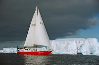
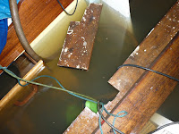
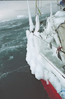
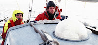

 |
| Snow Petrel reaches the Antarctic |
{kind=link}
It is dark and damp in Suffolk and I
should be conserving my torch batteries. It’s four in the morning
and I can hear the tide running through the gap in the plank which I
haven’t been able to plug. It’s okay. The electric dirty water
pump which I’ve managed to borrow is just about keeping pace with
the inflow. I don’t have any electricity on board but I’ve
plugged into a neighbour’s supply. I had thought he was away and broke into his boat with another neighbour's connivance. Then he
came back at 1.30 am, found my trespassing cable and
unplugged it. Chucked it back at me. Very likely cross. I’d fallen asleep by then on the wheelhouse floor but I
woke when the pump went quiet. My brain was
slow to work out what had happened and by the time I’d gone on deck my neighbour had gone
to bed. I'd never met him and I knew I was already in the wrong but I was desperate so I banged on the side of his cabin until I woke him and then I managed to explain why I needed to use his supply. I don’t know what I’d have done if
he hadn’t let me plug back in; I couldn’t keep pace with that
quantity of water by hand.
 |
| Misc floating objects I wasn't in the mood for photography |
{kind=link}
Meanwhile I’m far away, amazed and exalted in Cape Denison’s sun-drenched tranquillity. I have never been to Antarctica; I have never met the Tucker family but I'm reading Jon Tucker's Snow Petrel, his account of a voyage to Eastern Antarctica in a 34' steel yacht belonging to his oldest son, Ben, and reading in my current circumstances has been an extraordinarily intense experience. Later in the Tuckers' Antarctic adventure the weather turned violent. Jon, Ben and Jon's youngest son, Matt, were trapped for several days in their bunks as the blizzard raged outside. They’ll never know what speed the wind achieved as there was no possibility of venturing outside to measure it. All they could feel was their small yacht, Snow Petrel, sinking steadily lower as the weight of snow and ice on deck pressed her down. So what did they do in that situation where there was nothing that they could do? They read.
Tucker and his wife Barbara have brought up their five sons afloat. They have made long voyages, often out of sight of land, and frequently in potentially dangerous situations where they all have learned to trust one another's watch-keeping and seamanship, even when the person at the helm is a 10 year old boy. Books are an essential part of this: “There is something
intensely private about a small boat passage […] You are constantly
in the centre of a disc of sea with a visible horizon radius of about
three miles. Above is a dome of blue or grey or speckled black. Your
only habitable area is little larger than a walk in wardrobe. Your
only company is more often asleep than awake during your conscious
hours.
And yet you are free of
the constraints of everyday society. Your existence has been stripped
to its barest essentials. Your sleep patterns are re-programmed into
short blocks, irrespective of the passage of the sun. You become
introverted and focussed on a few vital specifics. Food, scheds,
progress reports and weather predictions dominate your thoughts.
But it is not a prison.
That is why a supply of engrossing books is vital on a well-prepared
yacht.”
Today's yachting families
may expect to be able to watch DVDs, blog, play games, post photographs and message friends. Let's be practical, however; all these activities are power-hungry. If the boat engine will be running regularly there’s little problem -- except that engines use fuel and, on board Snow
Petrel, both fuel and battery consumption was
constantly monitored, as was water, food and beer. I couldn't help giggling at the 'happy hour' where these three grown men shared a single can between them. But my giggles sprang from admiration. One of the most impressive features of this voyage was its research and planning, triumphantly undertaken by Tucker's eldest son Ben, the captain on this trip. Ben was a young man (late 20s? early 30s?) he wasn't financially rich, didn't have sponsorship or media support. This voyage was something he was doing from his own resources to achieve certain private goals. Specialist equipment was saved for, was homemade, bought in jumble sales, borrowed or received as much-appreciated, unsolicited gifts. Ben had organised at least three different methods of power generation, including solar panels, but Snow Petrel was going to be out of sight of land for weeks -- and beyond realistic hope of rescue for the majority of that time. .
 |
| Snow Petrel, iced |
{kind=link}
There would
be none of that rushing ashore to plug in the iPhone chargers that
has recently become a feature of our Peter
Duck holidays!
I love reading on board. I have done since I was a tiny child. It’s quite simply the best place in the
world -- though others might argue for tree houses or sunny hollows
amongst the heather. Looking back I realise that even as a child, much of my reading
was done to shut out the nautical anxieties and family tensions
which I was powerless to affect. This night, the adventures of Snow Petrel gained special intensity from being read on board Goldenray, our loved, neglected, dilapidated houseboat which had just survived a near-sinking experience. With a monitoring part of me I was listening to the flow of the water and the sound of the pump in the darkness but my mind was away with the penguins.
I read Jon Tucker's book, Snow
Petrel, again yesterday, skimming through it on
a train knowing that my reading period was finite. I can tell you now why I admire it. Firstly
for the sheer scale of the adventure: the small, home-built yacht,
the lack of finance, of sponsorship and high tech equipment. Secondly for the prevailing attitude that this was nothing portentous or extraordinary; that it was merely an extended family cruise, taking a slightly unfamiliar direction (ie due south and far beyond the point where the compass card would jam, dragged downwards at an impossible angle by its closeness to the magnetic pole). I relished Jon Tucker's style of writing; some passages intensely present, others reflective or informative. I also responded to his stance as the father who was standing aside; who was respecting the expertise of his eldest son, supporting the photographic passion of the youngest son, loving and knowing them both and only once finding it necessary to intervene when the brothers' priorities clashed. And all the while he was thanking and missing Barbara, his wife, their mother, who had been so generous with her understanding and her practical help and good advice. This was the longest period in their marriage for which Jon and Barbara been apart -- and I can't tell you how refreshing it is to read a tale of derring do which is also a tribute to gender equality and married love.
But this was Ben's voyage and when I'd finished Jon's book I went to visit Ben's website: Snowpetrel Sailing. 'Show your working' as we used to be told in maths lessons. I read carefully through his thoughts on power consumption and battery maintenance and let out a silent cheer when I reached this final sentence: "it is a good feeling to know that I can cut my needs down to just one small light and a book."
Thank you, Tuckers all -- from Julia and from Goldenray (who is now so much recovered that I can get back to worrying about the leaks in her decks rather than the holes in her hull!)
 |
| Jon and Ben entering the pack ice (photo by Matt Tucker) |
{kind=link}
But this was Ben's voyage and when I'd finished Jon's book I went to visit Ben's website: Snowpetrel Sailing. 'Show your working' as we used to be told in maths lessons. I read carefully through his thoughts on power consumption and battery maintenance and let out a silent cheer when I reached this final sentence: "it is a good feeling to know that I can cut my needs down to just one small light and a book."
Thank you, Tuckers all -- from Julia and from Goldenray (who is now so much recovered that I can get back to worrying about the leaks in her decks rather than the holes in her hull!)
 |
| Goldenray |